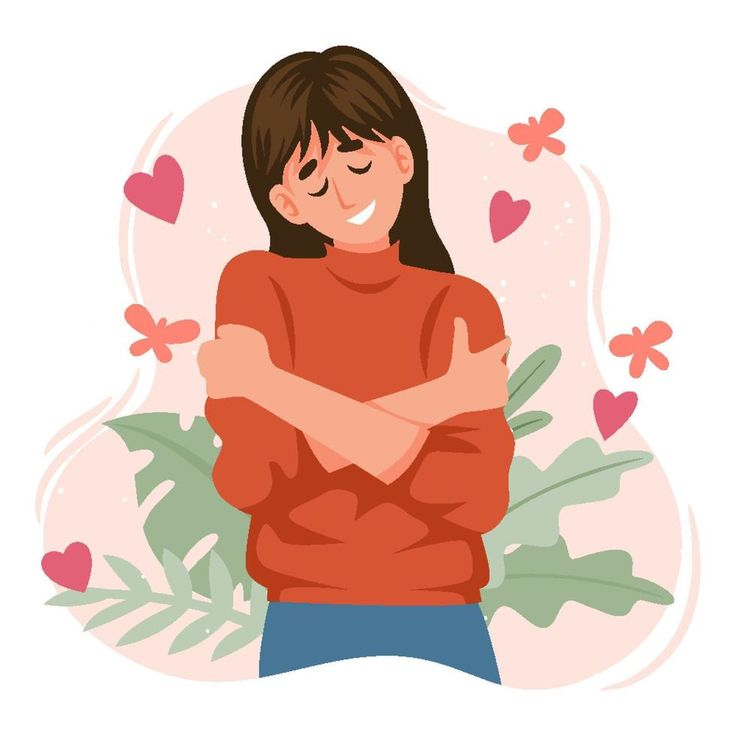
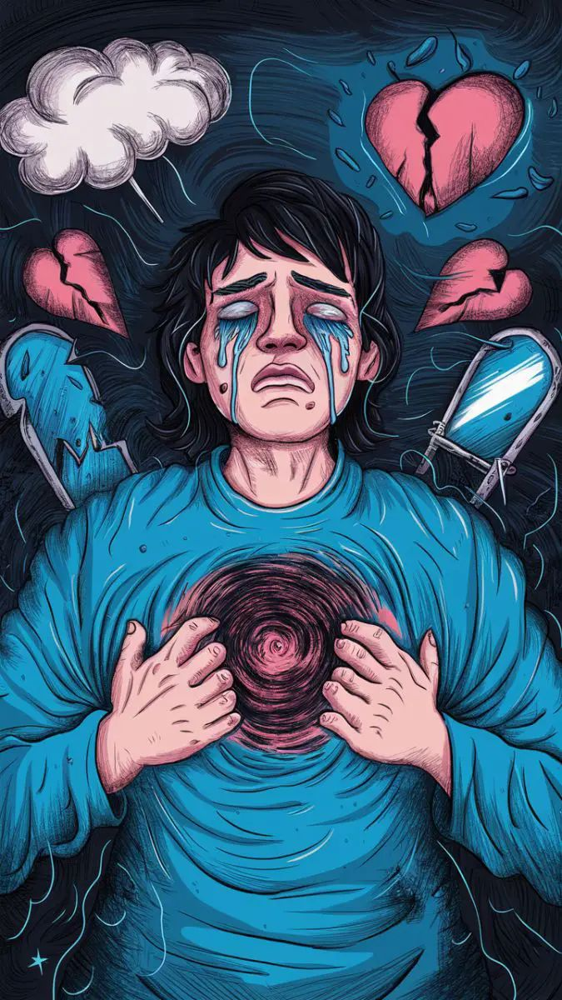
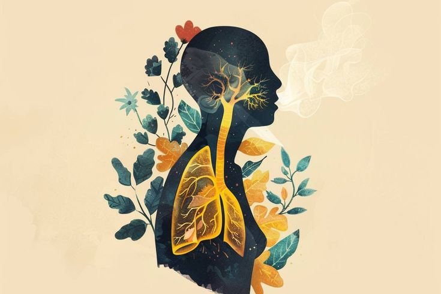

¿Qué es la Salud Mental?

La salud mental es un estado de bienestar emocional, psicológico y social. Afecta cómo pensamos, sentimos y actuamos. Es importante buscar apoyo cuando sentimos que necesitamos ayuda.
Además de la ausencia de trastornos mentales, la salud mental también se refiere a cómo manejamos el estrés, las relaciones y las decisiones cotidianas.
Bienestar Emocional
El bienestar emocional es la capacidad de comprender, manejar y expresar nuestras emociones de forma positiva. También implica tener relaciones saludables, una autoestima equilibrada y habilidades para afrontar los desafíos de la vida.
¿Cómo promover el bienestar emocional?
- Conócete a ti mismo: Tómate tiempo para reflexionar sobre tus pensamientos, emociones y necesidades. El autoconocimiento fortalece tu salud emocional.
- Establece límites sanos: Aprende a decir "no" cuando sea necesario. Proteger tu energía emocional es una forma de cuidarte.
- Rodéate de personas positivas: Las relaciones de apoyo y confianza son clave para el bienestar. Evita entornos tóxicos o negativos.
- Expresa tus emociones: Hablar sobre lo que sientes, escribir en un diario o practicar el arte son maneras saludables de liberar emociones.
- Disfruta de actividades placenteras: Hacer cosas que te gustan como leer, pintar, escuchar música o salir a caminar mejora tu estado de ánimo.
- Practica la gratitud: Agradecer lo que tienes y valorar lo positivo de cada día te ayuda a mantener una actitud optimista.
Importancia del equilibrio emocional
Las emociones influyen en cómo pensamos, actuamos y nos relacionamos. Mantener un equilibrio emocional no significa estar feliz todo el tiempo, sino aprender a manejar los altibajos de forma saludable.
Si sientes que te cuesta controlar tus emociones o que estás constantemente triste, irritable o sin energía, es recomendable buscar apoyo profesional. La salud mental y emocional son igual de importantes que la física.
¿Te gustaría saber si padeces de esto? Ingresa a este link
Estrés y Ansiedad
El estrés y la ansiedad son respuestas naturales del cuerpo ante situaciones difíciles o amenazantes. Sin embargo, cuando estas emociones son persistentes o intensas, pueden afectar nuestra salud mental y física.
¿Cómo manejar el estrés?
- Respiración profunda: Tómate unos minutos para inhalar y exhalar lentamente. Esto ayuda a reducir la tensión y a calmar la mente.
- Ejercicio físico: Actividades como caminar, correr, nadar o bailar liberan endorfinas que mejoran el estado de ánimo y reducen el estrés.
- Organiza tu tiempo: Prioriza tareas, establece metas realistas y evita sobrecargarte de responsabilidades.
- Aliméntate bien y descansa: Dormir al menos 7-8 horas diarias y tener una alimentación balanceada fortalece tu bienestar emocional.
- Evita sustancias nocivas: Reducir el consumo de cafeína, alcohol o tabaco puede disminuir la ansiedad.
- Habla con alguien: Compartir tus preocupaciones con amigos, familiares o un profesional puede ayudarte a ver las cosas desde otra perspectiva.
- Practica técnicas de relajación: La meditación, el yoga o la atención plena (mindfulness) son herramientas efectivas para encontrar calma.
¿Cuándo buscar ayuda profesional?
Si el estrés o la ansiedad interfieren con tu vida diaria, tus relaciones o tu salud, es importante acudir con un psicólogo o terapeuta. La atención temprana puede prevenir problemas más graves.
¿Sientes que podrías estar padeciendo de estrés? Ingresa a este link
Prevención y Apoyo
La prevención en salud mental consiste en adoptar hábitos y estrategias que fortalezcan nuestro equilibrio emocional y reduzcan el riesgo de desarrollar trastornos mentales. El apoyo adecuado, tanto profesional como social, también es fundamental para afrontar momentos difíciles.
Estrategias de prevención
- Rutinas saludables: Dormir bien, alimentarse de forma balanceada y mantener horarios estables favorecen la estabilidad emocional.
- Actividad física regular: El ejercicio libera endorfinas, reduce el estrés y mejora el estado de ánimo. Caminar, nadar o bailar son opciones accesibles.
- Red de apoyo social: Mantener relaciones cercanas con familiares y amigos permite compartir experiencias, emociones y recibir contención emocional.
- Tiempo libre y recreación: Espacios de descanso y disfrute ayudan a recargar energías y reducir la sobrecarga mental.
- Identificar señales de alerta: Cambios en el estado de ánimo, aislamiento, alteraciones en el sueño o apetito pueden ser señales de que algo no anda bien.
Buscar ayuda es un acto de fortaleza
Pedir apoyo no es señal de debilidad. Al contrario, reconocer que necesitamos ayuda demuestra valentía y compromiso con nuestro bienestar.
Algunas formas de recibir apoyo incluyen:
- Hablar con personas de confianza.
- Acudir a un psicólogo o terapeuta.
- Participar en grupos de apoyo o talleres de desarrollo personal.
- Utilizar líneas de ayuda o centros de atención emocional.
Prevenir es invertir en salud emocional. Un entorno sano, hábitos positivos y el acceso a recursos de apoyo pueden marcar una gran diferencia en la calidad de vida.
Contáctanos
Si necesitas ayuda o tienes preguntas, no dudes en ponerte en contacto con nosotros: